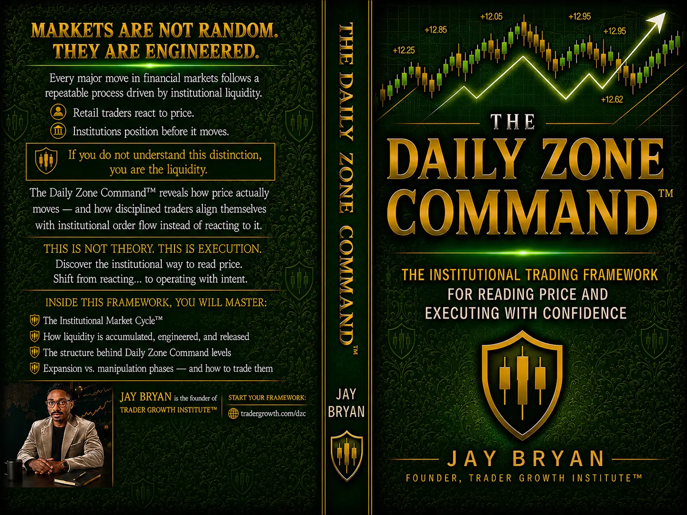

The market is engineered
Price movement reflects inventory, liquidity, and institutional positioning—not isolated chart patterns.
The TGI framework in print
The institutional trading framework for reading price and executing with confidence.
Markets are not random. They are engineered through liquidity, inventory, and institutional participation. This book gives serious traders a disciplined framework for reading that process before committing capital.
Available in Kindle and paperback editions.

The operating thesis
Retail traders are trained to chase patterns after price has moved. Capital operators begin higher: with authority, liquidity, market structure, and a defined risk mandate.
The Daily Zone Command turns those disciplines into a repeatable decision framework—not a collection of entries, signals, or promises.
Inside the doctrine
Price movement reflects inventory, liquidity, and institutional positioning—not isolated chart patterns.
Higher-timeframe authority defines which lower-timeframe opportunities deserve attention.
Accumulation, harvesting, displacement, and completion form a process that can be observed and tested.
Loss is defined before entry. Position size, invalidation, and reward must earn authorization together.
The command sequence
The objective is not to predict every move. It is to create a repeatable sequence that filters noise and protects capital when conditions are not authorized.
Explore the TGI trading glossaryEstablish the higher-timeframe regime.
Map institutional supply, demand, and liquidity.
Require displacement and valid confirmation.
Define loss, reward, and invalidation before entry.
Manage, document, and review the decision.
Who this is for
Read the framework
Build a process for reading authority, waiting for proof, and protecting capital before the next opportunity appears.